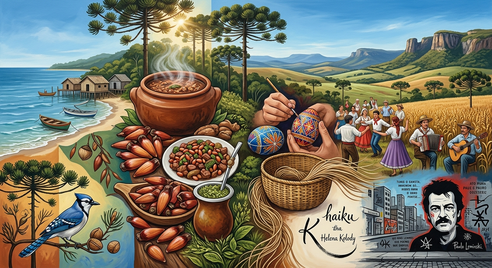

A Síntese da Identidade Paranaense

A cultura do Paraná destaca-se por como esses diferentes elementos se cruzam na vida cotidiana, na gastronomia, nas festas e nas artes do estado:
Gastronomia com História: Pratos como o Barreado no litoral (fruto da tradição caiçara e açoriana), o Entrevero de Pinhão nos Campos Gerais e o uso da Erva-Mate mostram a fusão direta entre a abundância da terra e os saberes tradicionais.
Arte e Poesia Únicas: A literatura local ganhou projeção nacional ao unir linguagens globais e locais, como nos haicais de Helena Kolody (com forte influência da delicadeza oriental) e na poesia de Paulo Leminski, marcados pela irreverência e pelo ritmo urbano.
Tradições Populares e Artesanato: Ritos visuais como a pintura das Pysanky (ovos de Páscoa decorados pela tradição ucraniana), as festas comunitárias da colheita e a cestaria indígena em taquara formam um acervo vivo preservado de geração em geração.
A cultura do Paraná é um mosaico vivo construído pela união entre os povos originários, os caminhos do tropeirismo e as diversas levas de imigrantes. Esta apresentação reúne os aspectos centrais que moldaram a identidade, a história e as manifestações artísticas do estado, destacando a importância de preservar e valorizar esse patrimônio singular.
História e Formação
Povos Originários: Antes da colonização, povos como Guarani, Kaingang e Xokleng dominavam o território, deixando marcas profundas na culinária, vocabulário e costumes.
e Povoamento Inicial: No século XVII, exploradores portugueses iniciaram o povoamento no litoral (Paranaguá, Antonina) impulsionados pelo ouro de aluvião.
Tropeirismo: Nos séculos XVIII e XIX, o transporte de gado entre o Sul e São Paulo cortou os Campos Gerais, dando origem a cidades como Lapa, Castro e Ponta Grossa.
LitoralEmancipação Política: Em 1853, o Paraná conquistou sua autonomia, tornando-se uma província própria com Curitiba como capital.
Memória e Pertencimento
Conecta os moradores às suas raízes indígenas, tropeiras e de imigrantes, fortalecendo a identidade local, a sustentabilidade ancestral e a preservação cultural.